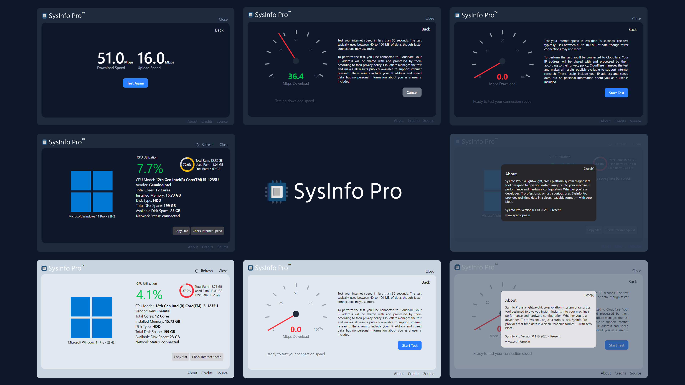

Clean, real-time system diagnostics for Windows
SysInfo Pro is a lightweight, zero-install system diagnostics tool that delivers real-time CPU, memory, disk, and network insights in a beautiful UI. Whether you're a developer, enthusiast, or just curious — it's built for you.
⬇️ Download for Windows 